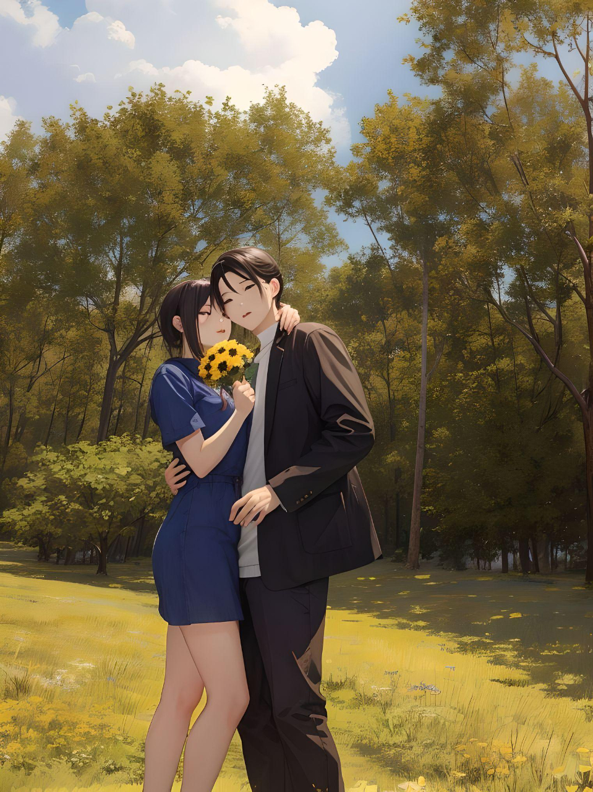

Page from My Heart
Andrés, Esta seguramente no será una carta de "amor"; leerás mis pensamientos, mis miedos, desmenuzarás mi alma, todo escrito en papel. Estoy feliz de poder compartirlo contigo. Aun me parece loco pensar que te conocí cuando apenas tenía 26 años. Apenas tenía un mes de haber regresado de un hermoso viaje que cambió mi vida.
Muchas veces pensé que todo esto es demasiado bueno para ser realidad. Somos diversos y al mismo tiempo similares. Mientras más pienso en nosotros, en nuestras historias y en nuestras experiencias, descubro que somos similares en partículas tan pequeñas, diversos en gustos, pero ambos somos soñadores. Tú tuviste la fortuna de tener una vida con experiencias increíbles, con muchas oportunidades, pero también tuviste tus dificultades que te han vuelto un chico aún más fuerte y generoso. Así es la vida, regala dificultades para que crezcamos, seamos humildes y pulamos nuestros talentos, empujándonos a nuestro máximo potencial. Pero también nos regala felicidad para recordar por qué nos gusta estar "vivos".
Andrés, no sé si lograré cumplir todos mis sueños más locos, pero me prometí dar lo mejor de mí. Siempre tengo miedo de decepcionar a los demás, incluso me da más miedo decepcionarme a mí misma, pero lo intentaré, lucharé, incluso si tengo que llegar de rodillas. No nací en una familia con tantos recursos, tuve que comenzar desde cero en este país, y ver cómo mi madre se multiplicaba por mil para darnos todo me hizo dar cuenta de que las oportunidades me las debo buscar yo. Mi manera de autoprotegerme siempre ha sido pensar que puedo sola, pero no porque me sienta superior; lo hacía más para no provocar decepciones. Pero desde que te conocí, tengo aún más miedo de decepcionar, pero al mismo tiempo, por primera vez siento que quiero caminar y continuar mi viaje con alguien. Obviamente, ese alguien eres tú. Mi vida fue complicada, y también a un punto la volví aún más complicada, pero no me puedo quejar, aprendí mucho, y también tuve muchas hermosas experiencias.
Sé que Dios es nuestro Padre Celestial, él nos ama, nos cuida y así como un padre ama a sus hijos por cómo son, eso no quiere decir que no amaría ver a sus hijos superarse. Si Dios tiene un plan para mí, siempre he tenido la idea de que él tiene un plan fantástico para mí, somos instrumentos en sus manos, ayúdame a recordarlo, caminemos juntos y con él guiando nuestro camino. Andrés, a veces soy ingrata y olvido y me apoyo solo en mí, ayúdame a recordar que con su fuerza puedo empujar hacia arriba con más fuerzas, y tú igual. Como escribí al inicio de esta carta, somos diversos, naturalmente, venimos de diversos países, diversas familias, diversas historias, diversos inicios, diversos en tamaño, en muchas cosas, pero tenemos algo que nos vuelve similares, son nuestras ganas de superarnos, de descubrir, de vivir, de soñar. Sin darme cuenta descubrí que eres el pedazo de puzzle que faltaba en mi vida, y es difícil de explicar con palabras, pero sin darme cuenta eres como un sueño hecho persona, no sabía que te buscaba hasta que te encontré. Gracias por ser mi persona especial, gracias por ser quien eres, te admiro y me inspiras a esforzarme más para exprimirme hacia mi potencial. Tú me enseñas, tú me complementas. Mi vida podría ser un reflejo de lo feo que a veces la vida se pone, y lo afortunado que eres; yo te enseñaré lo que es tener fuerza de voluntad. Gracias por dejarme entrar a tu mundo, tú representas humildad, sencillez, compromiso y el significado de "ser una buena persona", eres lo que más necesito para volar e ir más lejos. Nos complementamos, nos enseñamos mutuamente, nos encontramos fuera de lo común, nuestras diferencias nos hacen vernos más atractivos, por eso nos gustamos. ¡Vamos a comernos el mundo! Vamos por ello, juntos, al final de todo somos un equipo, ¿verdad? No pierdas tu esencia. Sé que Dios escucha nuestras oraciones, tú eres su respuesta. Ahora solo puedo sonreír y estar agradecida con Dios por la bonita respuesta. ¡Gracias por haber venido a Milán, Italia, gracias por el helado en Cairoli, gracias por las empanadas, gracias por las flores! No necesito un arcoiris, porque ya te tengo a ti.
Con mucho amor Katherine Gonzales.